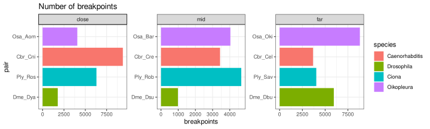
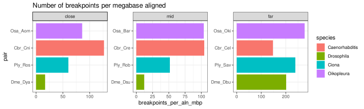

Scaling breakpoints
Michael Mansfield
Charles Plessy
06 January, 2023
Source:vignettes/ScalingBreakpoints.Rmd
ScalingBreakpoints.Rmd
knitr::opts_chunk$set(cache = TRUE)Introduction
In this vignette I attempt to contextualize the observed number of breakpoints for a given species pair by a few key metrics:
- Millions of years since divergence
- Branch length (i.e., a kind of substitution rate)
- dN/dS
The core functions used here are maintained in our GenomicBreaks R package, which is fully documented at: https://oist.github.io/GenomicBreaks.
Load R packages and data
library('OikScrambling') |> suppressPackageStartupMessages()
library('dplyr') |> suppressPackageStartupMessages()
genomes <- OikScrambling:::loadAllGenomes()
library('ggtree') |> suppressPackageStartupMessages()
library('treeio') |> suppressPackageStartupMessages()
library('phangorn') |> suppressPackageStartupMessages()
load("BreakPoints.Rdata")Inputting distance metrics
species <- SimpleList()
species$Oikopleura <- "(Kum:0.01136111178249175555,((Osa:0.00925951950869623869,Aom:0.00920798155370218530)100:0.05729289951873162146,(Bar:0.00721724152898447612,Nor:0.00688754343189192098)100:0.05951986243208125943)100:0.31437914450027298896,Oki:0.01142149265410641150);"
species$Ciona <- "(Rob:0.03128841990749874763,(Ros:0.01304087257513942937,Ply:0.01288782021364278871)100:0.02128682526879402057,Sav:0.55033545948338902232);"
## I nabbed this tree from the following:
# git clone https://github.com/SchriderLab/Drosophila_phylogeny
## To extract the relevant clades, I used:
# tree <- read.tree('Drosophila_phylogeny/tree/iqtree.tre')
# tree <- drop.tip(tree, which(!tmp$tip.label %in% c('D_melanogaster', 'D_busckii', 'D_yakuba', 'D_subpulchrella', 'D_mauritiana')))
# write.tree(tree, 'drosophila_4spp.newick')
species$Drosophila <- "(Dbu:0.3372973403,(Dsu:0.0947791254,(Dya:0.0703231461,(Dma:0.0280994984,Dme:0.0264284139)100_1_100:0.0267889071)100_1_100:0.0834632289)100_1_100:0.3712228549)100_1_100;"
species <- lapply(species, function(tree) as.treedata(midpoint(read.tree(text=tree)))) |> SimpleList()
nothing_special <- lapply(species, function(sp){
ggtree(sp, ladderize=T) + geom_tiplab(align=T) + hexpand(0.5) + geom_text(aes(x=branch, label=round(branch.length,2)), nudge_y=0.1) + geom_treescale() + geom_rootedge()
})With the species trees loaded, we can calculate per-pair branch length distances using ape::cophenetic().
species_dist <- SimpleList()
species_dist$cophenetic <- lapply(species, function(sp) cophenetic.phylo(sp@phylo)) |> SimpleList()For tunicates, the distances expressed in million years are taken from the molecular clock analysis except for the same-species pairs where they are arbitrarily set to 3, as an upper-bound estimate. The rationale is that as we are testing for speed, using the maximally conceivable distance prevents us from overestimating that speed.
# These are taken from the molecular clock analysis.
species_dist$mya <- SimpleList()
species_dist$mya$Oikopleura <- data.frame(
'Oki'=c(0, 3, 24.5347, 24.5347, 24.5347),
'Kum'=c(3, 0, 24.5347, 24.5347, 24.5347),
'Osa'=c(24.5347, 24.5347, 0, 7.2383, 3),
'Bar'=c(24.5347, 24.5347, 7.2383, 0, 7.2383),
'Aom'=c(24.5347, 24.5347, 3, 7.2383, 0)
)
species_dist$mya$Ciona <- data.frame(
'Sav'=c(0, 101.4633, 101.4633, 101.4633),
'Rob'=c(101.4633, 0, 11.8551, 11.8551),
'Ply'=c(101.4633, 11.8551, 0, 3),
'Ros'=c(101.4633, 11.8551, 3, 0)
)For Drosophila, the numbers are taken from https://www.sciencedirect.com/science/article/pii/S0960982221014962 which links to https://github.com/SchriderLab/Drosophila_phylogeny. Note that the smallest distance here is 3.6 million years, close to our upper-bound estimate for same-species tunicate populations.
species_dist$mya$Drosophila <- data.frame(
'Dbu'=c(0, 46.836, 46.836, 46.836, 46.836),
'Dsu'=c(46.836, 0, 13.1873, 13.1873, 13.1873),
'Dya'=c(46.836, 13.1873, 0, 6.7256, 6.7256),
'Dme'=c(46.836, 13.1873, 6.7256, 0, 3.6217),
'Dma'=c(46.836, 13.1873, 6.7256, 3.6217, 0)
)
species_dist$mya <- lapply(species_dist$mya, function(x) {
rownames(x) <- colnames(x)
x
}) |> SimpleList()Normalised breakpoint accumulation
bp_vs_dist <- function(query, target, wgo, dist_type="mya", species, extra = FALSE) {
dist_df <- species_dist[[dist_type]][[species]]
relevant_dist <- dist_df[rownames(dist_df)==query, colnames(dist_df)==target]
breakpoints <- wgo[wgo$type == "breakpoint region"]
wgo_size <- wgo |> width() |> sum()
wgo_size_mbp <- wgo_size / 1000000
breakpoints_per_scale = length(breakpoints)/relevant_dist
breakpoints_per_mbp = length(breakpoints)/wgo_size_mbp
data.frame(
species = species,
query = query,
target = target,
pair = paste0(query, "_", target),
dist_type = dist_type,
dist = relevant_dist,
breakpoints = length(breakpoints),
breakpoints_per_scale = breakpoints_per_scale,
breakpoints_per_mbp = breakpoints_per_mbp,
breakpoints_per_mbp_scaled = breakpoints_per_mbp / relevant_dist,
extra = extra)
}
mya_df <- rbind(
bp_vs_dist(query="Osa", target="Oki", wgo$Osa_Oki, dist_type="mya", "Oikopleura"),
bp_vs_dist(query="Oki", target="Bar", wgo$Oki_Bar, dist_type="mya", "Oikopleura", extra = TRUE),
bp_vs_dist(query="Osa", target="Bar", wgo$Osa_Bar, dist_type="mya", "Oikopleura"),
bp_vs_dist(query="Bar", target="Aom", wgo$Bar_Aom, dist_type="mya", "Oikopleura", extra = TRUE),
bp_vs_dist(query="Osa", target="Aom", wgo$Osa_Aom, dist_type="mya", "Oikopleura"),
bp_vs_dist(query="Oki", target="Kum", wgo$Oki_Kum, dist_type="mya", "Oikopleura", extra = TRUE),
bp_vs_dist(query="Ply", target="Sav", wgo$Ply_Sav, dist_type="mya", "Ciona"),
bp_vs_dist(query="Rob", target="Sav", wgo$Rob_Sav, dist_type="mya", "Ciona", extra = TRUE),
bp_vs_dist(query="Ply", target="Rob", wgo$Ply_Rob, dist_type="mya", "Ciona"),
bp_vs_dist(query="Rob", target="Ros", wgo$Rob_Ros, dist_type="mya", "Ciona", extra = TRUE),
bp_vs_dist(query="Ply", target="Ros", wgo$Ply_Ros, dist_type="mya", "Ciona"),
bp_vs_dist(query="Dme", target="Dbu", wgo$Dme_Dbu, dist_type="mya", "Drosophila"),
bp_vs_dist(query="Dme", target="Dsu", wgo$Dme_Dsu, dist_type="mya", "Drosophila"),
bp_vs_dist(query="Dme", target="Dya", wgo$Dme_Dya, dist_type="mya", "Drosophila")
)
mya_df$species <- factor(mya_df$species, levels=c("Drosophila", "Ciona", "Oikopleura"))
mya_df$pair <- factor(mya_df$pair,
levels=c("Dme_Dbu", "Dme_Dsu", "Dme_Dya",
"Ply_Sav", "Rob_Sav", "Ply_Rob", "Rob_Ros", "Ply_Ros",
"Osa_Oki", "Oki_Bar", "Osa_Bar", "Bar_Aom", "Osa_Aom", "Oki_Kum"))
rownames(mya_df) <- NULL
mya_df$comp <- factor(c("far", "far", "mid", "mid", "close", "close",
"far", "far", "mid", "mid", "close",
"far", "mid", "close"),
levels=c("close", "mid", "far"))
(mya_df)## species query target pair dist_type dist breakpoints
## 1 Oikopleura Osa Oki Osa_Oki mya 24.5347 8815
## 2 Oikopleura Oki Bar Oki_Bar mya 24.5347 8515
## 3 Oikopleura Osa Bar Osa_Bar mya 7.2383 4034
## 4 Oikopleura Bar Aom Bar_Aom mya 7.2383 4129
## 5 Oikopleura Osa Aom Osa_Aom mya 3.0000 4063
## 6 Oikopleura Oki Kum Oki_Kum mya 3.0000 4119
## 7 Ciona Ply Sav Ply_Sav mya 101.4633 4027
## 8 Ciona Rob Sav Rob_Sav mya 101.4633 4110
## 9 Ciona Ply Rob Ply_Rob mya 11.8551 4668
## 10 Ciona Rob Ros Rob_Ros mya 11.8551 4199
## 11 Ciona Ply Ros Ply_Ros mya 3.0000 6304
## 12 Drosophila Dme Dbu Dme_Dbu mya 46.8360 5951
## 13 Drosophila Dme Dsu Dme_Dsu mya 13.1873 984
## 14 Drosophila Dme Dya Dme_Dya mya 6.7256 1776
## breakpoints_per_scale breakpoints_per_mbp breakpoints_per_mbp_scaled extra
## 1 359.28705 161.499480 6.5824926 FALSE
## 2 347.05947 135.508993 5.5231567 TRUE
## 3 557.31318 73.885230 10.2075391 FALSE
## 4 570.43781 75.692099 10.4571652 TRUE
## 5 1354.33333 74.325365 24.7751216 FALSE
## 6 1373.00000 64.753470 21.5844899 TRUE
## 7 39.68923 31.374368 0.3092189 FALSE
## 8 40.50726 34.708245 0.3420768 TRUE
## 9 393.75459 36.322159 3.0638425 FALSE
## 10 354.19355 34.975105 2.9502159 TRUE
## 11 2101.33333 49.021171 16.3403902 FALSE
## 12 127.06038 43.816224 0.9355245 FALSE
## 13 74.61725 7.275702 0.5517204 FALSE
## 14 264.06566 12.999373 1.9328198 FALSE
## comp
## 1 far
## 2 far
## 3 mid
## 4 mid
## 5 close
## 6 close
## 7 far
## 8 far
## 9 mid
## 10 mid
## 11 close
## 12 far
## 13 mid
## 14 closeBreakpoint computation is tricky as expected number increases with time but the sensitivity of the counting decreases with distance. For instance we might need to mask repeat movements, which count as breakpoints but are better detected in closely related genomes. Also the Drosophila centromeres may need to be masked. But at this level of manual curation it may be better to find a more robust metric instead.
sub_df <- rbind(
bp_vs_dist(query="Osa", target="Oki", wgo$Osa_Oki, dist_type="cophenetic", "Oikopleura"),
bp_vs_dist(query="Osa", target="Bar", wgo$Osa_Bar, dist_type="cophenetic", "Oikopleura"),
bp_vs_dist(query="Osa", target="Aom", wgo$Osa_Aom, dist_type="cophenetic", "Oikopleura"),
bp_vs_dist(query="Ply", target="Ros", wgo$Ply_Ros, dist_type="cophenetic", "Ciona"),
bp_vs_dist(query="Ply", target="Rob", wgo$Ply_Rob, dist_type="cophenetic", "Ciona"),
bp_vs_dist(query="Ply", target="Sav", wgo$Ply_Sav, dist_type="cophenetic", "Ciona"),
bp_vs_dist(query="Dme", target="Dbu", wgo$Dme_Dbu, dist_type="cophenetic", "Drosophila"),
bp_vs_dist(query="Dme", target="Dsu", wgo$Dme_Dsu, dist_type="cophenetic", "Drosophila"),
bp_vs_dist(query="Dme", target="Dya", wgo$Dme_Dya, dist_type="cophenetic", "Drosophila")
)
sub_df$species <- factor(sub_df$species, levels=c("Drosophila", "Ciona", "Oikopleura"))
sub_df <- sub_df[order(sub_df$species, sub_df$breakpoints_per_mbp_scaled),]
rownames(sub_df) <- NULL
sub_df$pair <- factor(sub_df$pair, levels=sub_df$pair)
sub_df$comp <- factor(c("far", "mid", "close"), levels=c("close", "mid", "far"))
(sub_df)## species query target pair dist_type dist breakpoints
## 1 Drosophila Dme Dsu Dme_Dsu cophenetic 0.23145968 984
## 2 Drosophila Dme Dbu Dme_Dbu cophenetic 0.84520075 5951
## 3 Drosophila Dme Dya Dme_Dya cophenetic 0.12354047 1776
## 4 Ciona Ply Sav Ply_Sav cophenetic 0.58451010 4027
## 5 Ciona Ply Rob Ply_Rob cophenetic 0.06546307 4668
## 6 Ciona Ply Ros Ply_Ros cophenetic 0.02592869 6304
## 7 Oikopleura Osa Oki Osa_Oki cophenetic 0.39235306 8815
## 8 Oikopleura Osa Bar Osa_Bar cophenetic 0.13328952 4034
## 9 Oikopleura Osa Aom Osa_Aom cophenetic 0.01846750 4063
## breakpoints_per_scale breakpoints_per_mbp breakpoints_per_mbp_scaled extra
## 1 4251.280 7.275702 31.43400 FALSE
## 2 7040.931 43.816224 51.84120 FALSE
## 3 14375.856 12.999373 105.22360 FALSE
## 4 6889.530 31.374368 53.67635 FALSE
## 5 71307.385 36.322159 554.84966 FALSE
## 6 243128.339 49.021171 1890.61481 FALSE
## 7 22467.010 161.499480 411.61775 FALSE
## 8 30264.944 73.885230 554.32137 FALSE
## 9 220008.110 74.325365 4024.65739 FALSE
## comp
## 1 far
## 2 mid
## 3 close
## 4 far
## 5 mid
## 6 close
## 7 far
## 8 mid
## 9 closeThis said, O. dioica is always ahead of other species pairs after normalising by sequence length and evolutionary distance.
customPlot <- function(df, what, title, extra = "drop") {
if (extra == "drop" & ! is.null(df$extra)) df <- df[! df$extra,]
ggplot(df) +
aes(x=.data[[what]], y = pair, fill = species) +
geom_bar(stat='identity') +
facet_wrap(~comp, scales="free") +
theme_bw() +
ggtitle(title)
}
customPlot(mya_df, 'breakpoints', 'Number of breakpoints')
customPlot(mya_df, 'breakpoints_per_scale', 'Number of breakpoints per million years')
customPlot(mya_df, 'breakpoints_per_mbp', 'Number of breakpoints per megabase aligned')
customPlot(mya_df, 'breakpoints_per_mbp_scaled', 'Number of breakpoints per megabase aligned per million years diverged')
customPlot(mya_df, 'breakpoints_per_mbp_scaled', 'Number of breakpoints per megabase aligned per million years diverged', extra = TRUE)
customPlot(sub_df, 'breakpoints_per_mbp_scaled', 'Number of breakpoints per megabase aligned per substitution distance')
Session information
## R version 4.1.2 (2021-11-01)
## Platform: x86_64-pc-linux-gnu (64-bit)
## Running under: Debian GNU/Linux bookworm/sid
##
## Matrix products: default
## BLAS: /usr/lib/x86_64-linux-gnu/blas/libblas.so.3.10.0
## LAPACK: /usr/lib/x86_64-linux-gnu/lapack/liblapack.so.3.10.0
##
## locale:
## [1] LC_CTYPE=en_US.UTF-8 LC_NUMERIC=C
## [3] LC_TIME=en_US.UTF-8 LC_COLLATE=en_US.UTF-8
## [5] LC_MONETARY=en_US.UTF-8 LC_MESSAGES=en_US.UTF-8
## [7] LC_PAPER=en_US.UTF-8 LC_NAME=C
## [9] LC_ADDRESS=C LC_TELEPHONE=C
## [11] LC_MEASUREMENT=en_US.UTF-8 LC_IDENTIFICATION=C
##
## attached base packages:
## [1] stats4 stats graphics grDevices utils datasets methods
## [8] base
##
## other attached packages:
## [1] phangorn_2.10.0
## [2] ape_5.6-2
## [3] treeio_1.18.1
## [4] ggtree_3.2.1
## [5] BSgenome.Oidioi.genoscope.OdB3_1.0.0
## [6] BSgenome.Oidioi.OIST.AOM.5.5f_1.0.1
## [7] BSgenome.Oidioi.OIST.KUM.M3.7f_1.0.1
## [8] BSgenome.Oidioi.OIST.Bar2.p4_1.0.1
## [9] BSgenome.Oidioi.OIST.OSKA2016v1.9_1.0.0
## [10] BSgenome.Oidioi.OIST.OKI2018.I69_1.0.1
## [11] dplyr_1.0.8
## [12] OikScrambling_4.1.0
## [13] ggplot2_3.3.5
## [14] GenomicBreaks_0.13.1
## [15] BSgenome_1.62.0
## [16] rtracklayer_1.54.0
## [17] Biostrings_2.62.0
## [18] XVector_0.34.0
## [19] GenomicRanges_1.46.1
## [20] GenomeInfoDb_1.30.1
## [21] IRanges_2.28.0
## [22] S4Vectors_0.32.3
## [23] BiocGenerics_0.40.0
##
## loaded via a namespace (and not attached):
## [1] utf8_1.2.2 R.utils_2.11.0
## [3] tidyselect_1.1.2 lme4_1.1-28
## [5] poweRlaw_0.70.6 RSQLite_2.2.10
## [7] AnnotationDbi_1.56.2 htmlwidgets_1.5.4
## [9] grid_4.1.2 BiocParallel_1.28.3
## [11] munsell_0.5.0 codetools_0.2-18
## [13] ragg_1.2.1 withr_2.5.0
## [15] colorspace_2.0-3 Biobase_2.54.0
## [17] highr_0.9 knitr_1.37
## [19] rstudioapi_0.13 genoPlotR_0.8.11
## [21] MatrixGenerics_1.6.0 labeling_0.4.2
## [23] GenomeInfoDbData_1.2.7 farver_2.1.0
## [25] bit64_4.0.5 rprojroot_2.0.2
## [27] vctrs_0.3.8 generics_0.1.2
## [29] xfun_0.30 R6_2.5.1
## [31] locfit_1.5-9.5 heatmaps_1.18.0
## [33] bitops_1.0-7 cachem_1.0.6
## [35] gridGraphics_0.5-1 DelayedArray_0.20.0
## [37] assertthat_0.2.1 BiocIO_1.4.0
## [39] scales_1.1.1 nnet_7.3-16
## [41] gtable_0.3.0 weights_1.0.4
## [43] rlang_1.0.2 systemfonts_1.0.3
## [45] splines_4.1.2 lazyeval_0.2.2
## [47] broom_0.7.12 checkmate_2.0.0
## [49] yaml_2.3.5 reshape2_1.4.4
## [51] abind_1.4-5 backports_1.4.1
## [53] Hmisc_4.6-0 tools_4.1.2
## [55] ggplotify_0.1.0 ellipsis_0.3.2
## [57] jquerylib_0.1.4 RColorBrewer_1.1-2
## [59] Rcpp_1.0.8.3 plyr_1.8.6
## [61] base64enc_0.1-3 zlibbioc_1.40.0
## [63] purrr_0.3.4 RCurl_1.98-1.6
## [65] rpart_4.1-15 SummarizedExperiment_1.24.0
## [67] cluster_2.1.2 fs_1.5.2
## [69] magrittr_2.0.2 data.table_1.14.2
## [71] matrixStats_0.61.0 hms_1.1.1
## [73] patchwork_1.1.1 fftwtools_0.9-11
## [75] evaluate_0.15 xtable_1.8-4
## [77] XML_3.99-0.9 jpeg_0.1-9
## [79] gridExtra_2.3 compiler_4.1.2
## [81] tibble_3.1.6 mice_3.14.0
## [83] KernSmooth_2.23-20 crayon_1.5.0
## [85] minqa_1.2.4 R.oo_1.24.0
## [87] htmltools_0.5.2 ggfun_0.0.4
## [89] tzdb_0.2.0 tiff_0.1-11
## [91] Formula_1.2-4 tidyr_1.2.0
## [93] aplot_0.1.1 DBI_1.1.2
## [95] MASS_7.3-54 boot_1.3-28
## [97] Matrix_1.4-0 ade4_1.7-18
## [99] readr_2.1.2 cli_3.2.0
## [101] quadprog_1.5-8 R.methodsS3_1.8.1
## [103] gdata_2.18.0 parallel_4.1.2
## [105] igraph_1.3.5 pkgconfig_2.0.3
## [107] pkgdown_2.0.2 GenomicAlignments_1.30.0
## [109] foreign_0.8-81 annotate_1.72.0
## [111] bslib_0.3.1 yulab.utils_0.0.4
## [113] stringr_1.4.0 digest_0.6.29
## [115] pracma_2.3.8 CNEr_1.30.0
## [117] rmarkdown_2.11 fastmatch_1.1-3
## [119] tidytree_0.4.2 htmlTable_2.4.0
## [121] restfulr_0.0.13 EBImage_4.36.0
## [123] Rsamtools_2.10.0 gtools_3.9.2
## [125] rjson_0.2.21 nloptr_1.2.2.3
## [127] lifecycle_1.0.1 nlme_3.1-153
## [129] jsonlite_1.8.0 desc_1.4.1
## [131] fansi_1.0.2 pillar_1.7.0
## [133] lattice_0.20-45 KEGGREST_1.34.0
## [135] fastmap_1.1.0 httr_1.4.2
## [137] plotrix_3.8-2 survival_3.2-13
## [139] GO.db_3.14.0 glue_1.6.2
## [141] png_0.1-7 bit_4.0.4
## [143] stringi_1.7.6 sass_0.4.0
## [145] blob_1.2.2 textshaping_0.3.6
## [147] latticeExtra_0.6-29 memoise_2.0.1